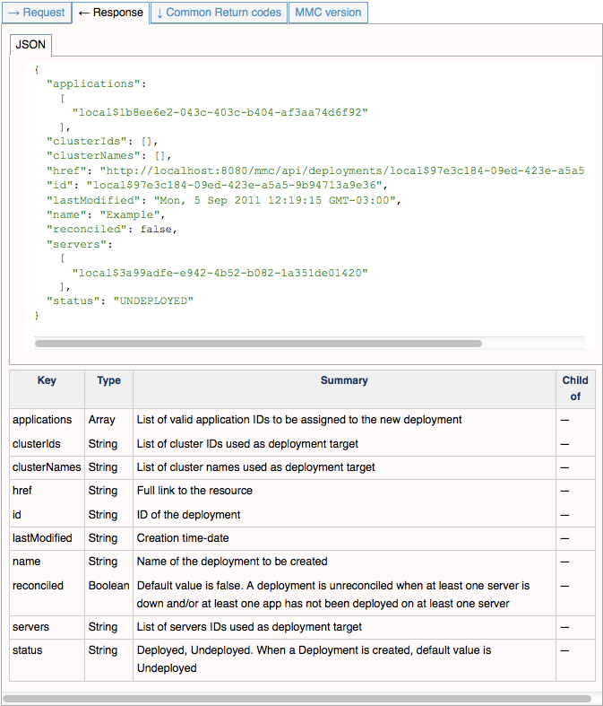
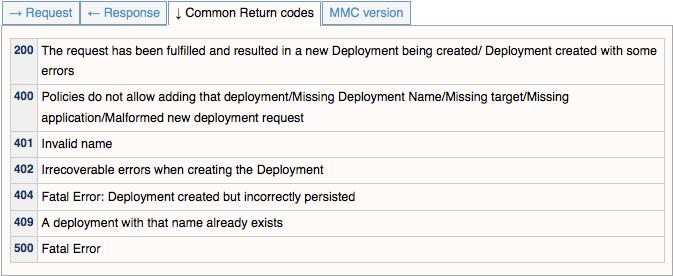
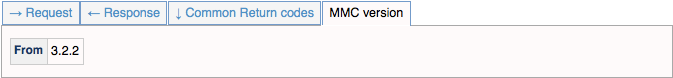

REST API Reference
The Mule Management Console provides REST APIs that you can use to programmatically access much of the console’s functionality.
For details on the management console API, consult Using the Management Console API.
Intended Audience
This document, and the child pages of the REST API Reference Guide, are a technical reference. They are intended for users with solid knowledge of the Mule Management Console, and with some working knowledge of REST. They do not contain instructions or contextual information. For information on installing, configuring and running Mule ESB, consult the Mule 3 User Guide.
REST API Reference
This guide comprises a total of six documents, which cover the following topics:
These documents are a technical reference only, and do not contain instructions or contextual information.
Content Organization and Conventions
All of the documents in this guide follow the same organization and conventions. Each document consists of the following sections:
-
Index of operations
-
Page title
-
Assumptions
-
REST resource name
-
HTTP Method and operation name
-
Operation
Section: Index of Operations
The first section of each document. The index is expandable; it lists the REST operations described in the document. For example, from the Deployments - old page:
Section: Assumptions
This section lists assumed parameters for all operations detailed in the document. The parameters are:
-
MMC host
-
MMC listening port
-
Application deployed (full name of the deployed MMC as Web Application)
-
The name of the
.warfile determines the resources path. For the sake of brevity, the documents assume that the downloaded MMC Web Application has been renamed tommc.war. You may use any name that is more convenient for your site, provided that you update the resource path accordingly.
-
-
MMC user name and password
Section: REST Resource Name
The title of this section is the URI of the REST resource documented in the section. For example, the first section in the Deployments - old page is:
/api/deployments
A single document may contain more than one Resource section. In such cases, the first section always corresponds to the URL, and subsequent sections refer to URIs. For example, in the Servers page, the first Resource section is /api/Servers; subsequent sections are /api/Servers/{serverId}, /api/Servers/{serverId}/applications, etc.
|
Resource Description Syntax In all documents, variable content that must be provided by the user is enclosed in {braces}. For example: Variable content that is optional is enclosed in [brackets]. For example: |
Section: Operation
This section describes the operations that you can perform via the REST API. All Operation sections have the same heading:
HTTP METHOD |
OPERATION NAME |
Short description of the operation.
For example, in the Deployments page, the following heading marks the section that describes the CREATE operation:
POST |
CREATE |
Creates a new Deployment.
In the example above, POST is the HTTP method used to perform a CREATE operation.
For improved readability, all documents identify HTTP methods by their own distinctive color:
POST |
GET |
PUT |
DELETE |
Each Operation section contains a table with clickable tabs. This table holds the actual contents of the section. Each table is divided into four tabs (highlighted in the image below):
Click each tab to see the relevant information. The image below illustrates the result of clicking the Request tab for this particular example:
Tabs Reference
-
Request(see image above): Provides details of the request to the REST API. This tab includes:
-
An example of an issued request (in the image above, a JSON file)
-
A table listing all parameters necessary to issue the request
-
An info box with additional information, if appropriate
-
Commands to issue the request with the curl utility, for testing on Windows and Linux
-
-
Response: Provides an example of the response from the REST API for this particular request. Includes a table detailing possible contents of the response.
 -
Common Return Codes: Lists common HTTP return codes generated by the operation.
 -
MMC Version: Specifies from which version of MMC the operation is available.
